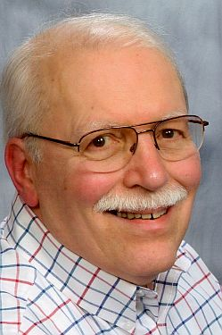
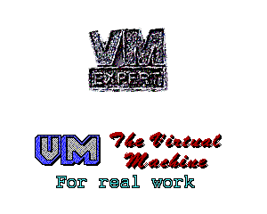
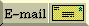
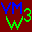

Welcome to Fran's personal page on the SRUVM WWW server.
This server is powered by IBM z/VM 3.1 running on a FLEX-ES
emulator.
FLEX-ES 6.2.22 runs on SCO UnixWare 7.1.3 in an IBM X-232 server.
Web pages are served out by Rick Troth's WEBSHARE.
This system will be phased out in a few years as we install a new
SIS
This page is defined by the file INDEX HTML, which
resides on
my 192 minidisk and is listed in my WEBSHARE
FILELIST.
HTML is plain text, so it doesn't matter that it's an EBCDIC HOST;
the file is ordinary ASCII when most of you read it.

francis.hensler@sru.eduHere are some links you might find interesting:
